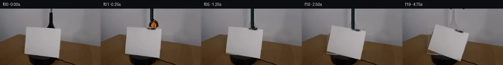
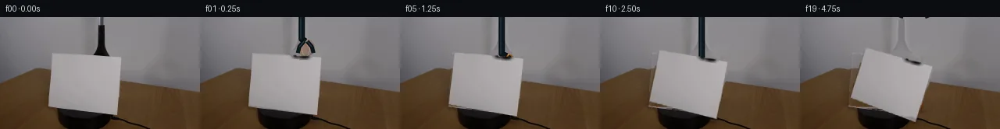
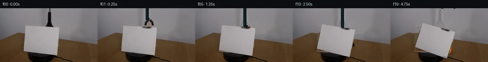
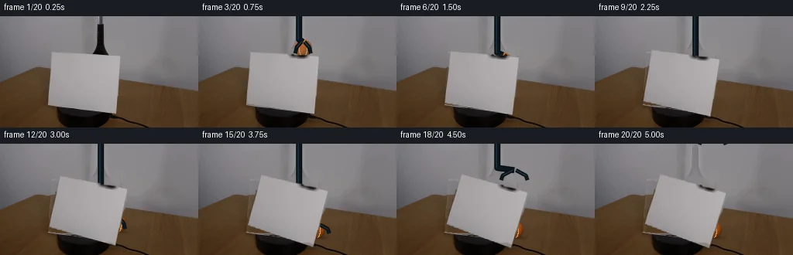
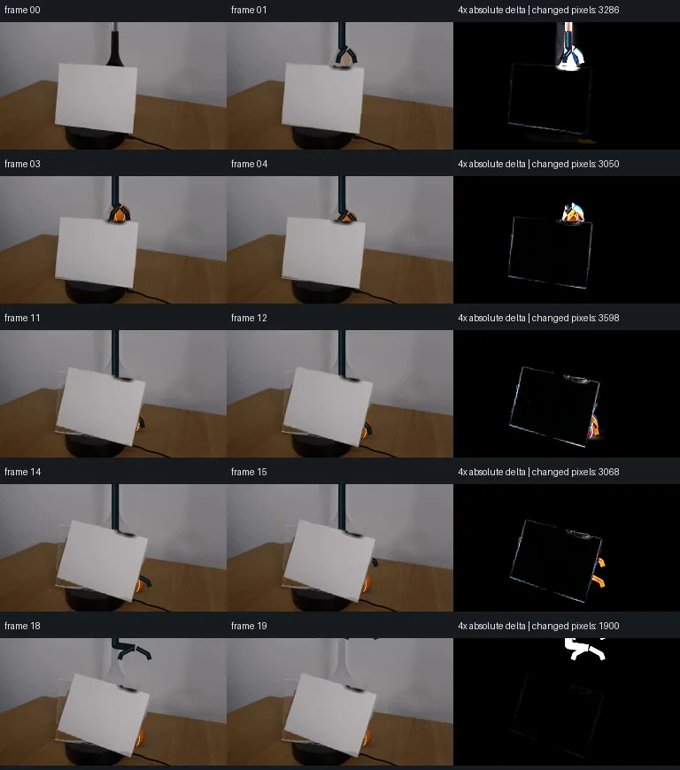

初版 V0
![]()
Observable Generation Trace
把最终像素视频、Harness 冻结的每轮候选、真实工具事件和 Agent 自述放在同一页。可观测证据与模型自述分开标记，避免把“模型说它检查过”误当成真实工具调用。
![首帧]()
Static locked-off single-shot with fixed frame throughout filmed with constant framerate in real-time. The scene shows a realistic scientific demonstration. The scene only contains the described setup and actions. The blue-black grabber tool held the tennis ball above the cardstock and lowered it behind the cardstock. The cardstock sits on the black platform on top of a wooden table. The blue-black grabber tool places the orange tennis ball behind the clockwise-rotating cardstock on the table.
首帧显示在左侧播放器初始画面。Track 权限、隔离和 tensor 一致性来自 run manifest，而不是 METHOD.md。
上方并排显示初版和最终版，默认同步播放；下方每个版本可独立播放，也可勾选加入同步播放。仅检查图更新的连续重复快照已合并，回退旧视频仍保留为一次修订。
Observable events
来源：events.jsonl + run manifest
此 Track 禁止读取输出图片。逐轮预览由外部 Harness 自动冻结，只用于事后审计，生成 Agent 当时看不到这些页面。
Frozen candidates
每张图来自该 round 的真实 00 / 01 / 05 / 10 / 19 帧

pixels a6d93e9126402e3d · code bb9fec38df2ddc9e
--- previous/generate.py +++ current/generate.py @@ -0,0 +1,315 @@ +from pathlib import Path + +import cv2 +import numpy as np +from PIL import Image, ImageDraw, ImageFont + +import artifact_io + + +ROOT = Path(__file__).resolve().parent +H, W = 144, 256 + + +def smoothstep(x): + x = np.clip(x, 0.0, 1.0) + return x * x * (3.0 - 2.0 * x) + + +def polygon_mask(points, blur=0.65): + """Return a feathered full-resolution polygon matte.""" + mask = np.zeros((H, W), np.float32) + cv2.fillPoly(mask, [np.asarray(points, np.int32)], 1.0, lineType=cv2.LINE_AA) + if blur: + mask = cv2.GaussianBlur(mask, (0, 0), blur) + return np.clip(mask, 0.0, 1.0) + + +def over(dst, rgb, alpha): + """Alpha composite rgb/alpha over a floating RGB canvas.""" + a = np.clip(alpha, 0.0, 1.0)[..., None] + return dst * (1.0 - a) + rgb * a + + +def make_clean_plate(src, card_matte): + """Remove the initial card/tool locally while preserving the fixed scene.""" + srcf = src.astype(np.float32) + plate = srcf.copy() + + # A conservative removal mask includes the sheet and the vertical tool. + tool = polygon_mask([(117, 0), (143, 0), (143, 54), (115, 57)], 1.1) + remove = np.maximum(card_matte, tool) + + # Row-wise interpolation uses untouched pixels on both sides. It follows the + # actual background/table illumination rather than inventing a flat fill. + fill = srcf.copy() + for y in range(H): + xl, xr = 52, 169 + left = srcf[y, xl] + right = srcf[y, xr] + xx = np.arange(W, dtype=np.float32) + w = np.clip((xx - xl) / (xr - xl), 0.0, 1.0)[:, None] + row = left[None, :] * (1.0 - w) + right[None, :] * w + # Retain fine, low-amplitude source texture from a nearby unoccluded row. + sample_y = min(H - 1, y + (7 if y < 96 else -7)) + residual = srcf[sample_y] - cv2.GaussianBlur( + srcf[sample_y][None, :, :], (0, 0), 4.0 + )[0] + fill[y] = np.clip(row + 0.28 * residual, 0, 255) + + plate = over(plate, fill, remove) + + # Reconstruct only the portion of the dark platform formerly hidden by the + # card. Untouched platform pixels remain directly from the source. + platform_shape = polygon_mask( + [(73, 116), (151, 115), (193, 135), (188, 143), (87, 143), (73, 130)], + 0.7, + ) + platform_fill = srcf.copy() + for y in range(114, H): + # Known platform samples flank the old cardstock at these coordinates. + left_x, right_x = 79, 179 + left = srcf[y, left_x] + right = srcf[y, right_x] + for x in range(55, 198): + q = np.clip((x - left_x) / max(1, right_x - left_x), 0.0, 1.0) + c = left * (1.0 - q) + right * q + # Central platform interior is slightly darker than its side rim. + depth = smoothstep((y - 116) / 24.0) + platform_fill[y, x] = np.clip(c * (1.0 - 0.10 * depth), 0, 255) + missing_platform = platform_shape * remove + plate = over(plate, platform_fill, missing_platform) + return np.clip(plate, 0, 255), remove, platform_shape + + +def make_card_layer(src, card_matte): + """Prepare source-derived cardstock, repairing the tiny tool overlap.""" + repaired = src.copy() … diff truncated; 228 more lines …

pixels 7355a82129a31252 · code afe63d3c6bd943d8
--- previous/generate.py
+++ current/generate.py
@@ -2,7 +2,7 @@
import cv2
import numpy as np
-from PIL import Image, ImageDraw, ImageFont
+from PIL import Image, ImageDraw
import artifact_io
@@ -149,9 +149,8 @@
"""Draw a subtle blue-black shaft and a pair of articulated grabber jaws."""
scale = 4
canvas = np.zeros((H * scale, W * scale, 4), np.uint8)
- draw = ImageDraw.Draw(Image.fromarray(canvas), "RGBA")
# Pillow's ImageDraw must operate on a persistent image object.
- im = Image.fromarray(canvas, "RGBA")
+ im = Image.fromarray(canvas)
draw = ImageDraw.Draw(im, "RGBA")
s = scale
shaft_x = 130.0
@@ -203,7 +202,9 @@
ball_y = 43.0 + (t - 3) * (68.0 / 9.0)
else:
ball_y = 111.0
- ball_x = 135.0 + 4.5 * smoothstep((t - 3) / 9.0)
+ # The grabber arcs slightly rightward while lowering. This places the ball
+ # close enough to the rotating card's exposed edge to remain visibly placed.
+ ball_x = 135.0 + 11.0 * smoothstep((t - 3) / 9.0)
if t < 12:
jaw_y = ball_y
@@ -234,7 +235,10 @@
if near_support > 0:
canvas = add_contact_shadow(canvas, bx, by, near_support)
- ball_rgb, ball_alpha = ball_layer(bx, by, 11.1, visibility=1.0)
+ # Frame 00 contains no separable orange pixels; the first three frames
+ # gently reveal the ball from the deep shadow at the sheet's top edge.
+ visibility = smoothstep(t / 3.0)
+ ball_rgb, ball_alpha = ball_layer(bx, by, 11.1, visibility=visibility)
canvas = over(canvas, ball_rgb, ball_alpha)
tool_rgb, tool_alpha = draw_tool_layer(bx, jy, opening, retract=t > 14)pixels 7355a82129a31252 · code afe63d3c6bd943d8
No generate.py text change in this frozen round.

pixels fdddc3a9d0c9b3a1 · code 4660fe276b266c23
--- previous/generate.py
+++ current/generate.py
@@ -204,7 +204,7 @@
ball_y = 111.0
# The grabber arcs slightly rightward while lowering. This places the ball
# close enough to the rotating card's exposed edge to remain visibly placed.
- ball_x = 135.0 + 11.0 * smoothstep((t - 3) / 9.0)
+ ball_x = 135.0 + 17.0 * smoothstep((t - 3) / 9.0)
if t < 12:
jaw_y = ball_ypixels fdddc3a9d0c9b3a1 · code 4660fe276b266c23
No generate.py text change in this frozen round.
Final visual checks
Harness 保存的最终产物


Agent claims
以下文字由生成 Agent 撰写，不等同于工具证据
Inspection method: local Pillow/NumPy/OpenCV reads of the RGB array only (shape, palettes, thresholds, connected components, scanlines, gradients, and text/ASCII summaries). No image viewer or image-reading model was used.
(66,47) -> (156,51) -> (150,125) -> (62,113), with softly antialiased, irregular edges and naturally uneven illumination. Its apparent center is near (109,85) and its contact/pivot point is near (109,120).(115,106,101), pale-card values are typically (160..178,156..174,158..176), near-black equipment is roughly (2..35,1..35,0..35), and the table is approximately (70..100,45..75,20..50).The original card and upper grabber will be removed from a clean background plate with local row-wise interpolation and texture-preserving fill. The source cardstock pixels will be isolated with a feathered quadrilateral matte, locally repaired where the grabber overlaps them, and rotated about the measured bottom pivot. A shaded, textured orange sphere with tennis-ball seams and a jointed blue-black grabber will be rendered behind that rotating source-derived card. A reconstructed dark platform and its front lip maintain correct depth ordering and contact.
This sequence was generated entirely with local deterministic Python pixel operations. No image-view/read tool, external model, external engine, network resource, mask, reference image, or other case was used.
first_frame.png was inspected only as an RGB tensor with Pillow, NumPy, and OpenCV. I used array shape and channel statistics, median-cut color summaries, RGB/HSV-like thresholds, connected-component bounds, scanline gradients, luminance runs, and text/ASCII downsamplings to measure the cardstock, grabber, platform, table, and background. I did not visually review the PNGs or contact sheets.
first_frame.png.(109,120).artifact_io.save writes the required 20 RGB PNGs, the uint32 0xRRGGBB tensor, inspection sheet, and standalone player. generate.py additionally creates transition_check.png, with selected adjacent frames and 4x amplified absolute differences.
The generator performs these assertions after saving:
(20,144,256,3) and dtype is uint8;pixels.npz has shape (144,256,20), dtype uint32, and exactly equals every frame packed as 0xRRGGBB;Final numeric tracking confirms the orange ball appears above the card, becomes occluded during descent, reappears at the exposed right edge in frames 10-11, and remains stationary as a stable orange crescent through frame 19.